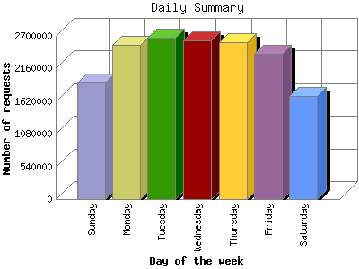

The Daily Summary identifies the level of activity as a total for each day of the week. This summary also compares the level of activity on weekdays and weekends as a total for the report time frame.

| Day of the week | Number of requests | Number of page requests | |
|---|---|---|---|
| 1. | Sunday | 1,929,104 | 145,998 |
| 2. | Monday | 2,558,215 | 155,786 |
| 3. | Tuesday | 2,673,513 | 169,293 |
| 4. | Wednesday | 2,620,445 | 165,510 |
| 5. | Thursday | 2,599,203 | 165,421 |
| 6. | Friday | 2,403,211 | 160,304 |
| 7. | Saturday | 1,711,766 | 134,328 |
| Total Weekdays | 12,854,587 | 816,314 | |
| Total Weekend | 3,640,870 | 280,326 | |
This report was generated on January 11, 2009 00:22.
Report time frame December 18, 2003 11:34 to January 11, 2009 00:21.